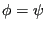
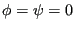

Next: *MOHR COULOMB HARDENING Up: Input deck format Previous: *MODEL CHANGE Contents
Keyword type: model definition, material
This keyword is used to define the friction angle and dilation angle for the yield surface and the flow rule, respectively, of a Mohr-Coulomb material. The theory for this plasticity model is described in Section 6.8.11. There are no parameters for this keyword.
The temperature dependence is taken into account in a piecewise linear way based on the data at discrete temperature points.
The use of a *MOHR COULOMB card requires a *MOHR COULOMB HARDENING card
within the same material definition in order to define the cohesion stress
 .
.
Notice that for  
First line:
Following line:
Example: *MOHR COULOMB 20.,10.,294.
defines a Mohr-Coulomb material for temperature T=294. Since the definition includes values for only one temperature, they are valid for all temperatures.
Example files: mohr1, mohr2.